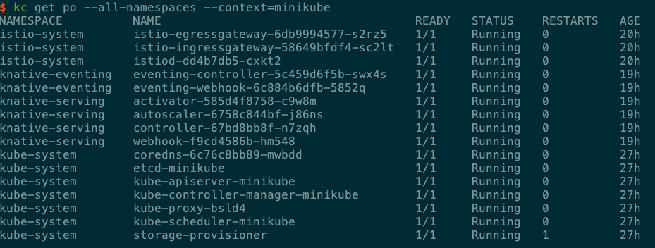

需要搭建一套knative的测试环境，但是没有测试集群可以用了，就用自己的电脑搭建了一个测试环境。搭建过程记录一下
环境信息
os:Mac
Driver:VirtualBox
搭建minikube
一条命令即可,可以指定cpu和内存–cpus int –memory int
1
| minikube start --vm-driver=virtualbox --image-repository='registry.cn-hangzhou.aliyuncs.com/google_containers'
|
minikube常用命令
1
2
3
4
5
6
7
8
9
10
11
12
13
14
15
16
17
18
19
| 1. minikube start 启动minikube
2. minikube dashboard 打开dashboard
3. minikube version 查看minikube版本
4. minikube status 查看集群状态
5. minikube ip 显示虚拟机ip地址
6. minikube stop 停止虚拟机
7. minikube ssh ssh到虚拟机中
8. minikube delete 删除虚拟机
9. minikube logs 查看虚拟机日志
10. minikube update-check 检查更新
11. minikube node list[add|start|stop|delete] 对节点进行操作
12. minikube mount 将指定的目录挂载到minikube
13. minikube docker-env 配置环境以使用minikube的docker守护进程
14. minikube podman-env 配置环境以使用minikube的Podman服务
15. minikube cache 添加，删除，或推送一个本地映像到minikube
16. minikube addons 启用或禁用一个minikube插件
17. minikube config 修改持久化配置值
18. minikube profile 获取或者列出当前的配置文件（集群）
19. minikube update-context 在IP或者端口改变的情况下更新kubeconfig
|
安装成功后提示如下：
1
2
3
4
5
6
7
8
9
10
| 😄 Darwin 10.14.6 上的 minikube v1.8.2
✨ 根据现有的配置文件使用 virtualbox 驱动程序
✅ 正在使用镜像存储库 registry.cn-hangzhou.aliyuncs.com/google_containers
💾 Downloading preloaded images tarball for k8s v1.17.3 ...
⌛ 重新配置现有主机
🏃 Using the running virtualbox "minikube" VM ...
🐳 正在 Docker 19.03.6 中准备 Kubernetes v1.17.3…
🚀 正在启动 Kubernetes ...
🌟 Enabling addons: default-storageclass, storage-provisioner
🏄 完成！kubectl 已经配置至 "minikube"
|
搭建istio
下载istio的包，然后根据提示配置环境变量，由于某些已知原因，可以配置host
1
| 199.232.28.133 raw.githubusercontent.com
|
1
| curl -L https://istio.io/downloadIstio | ISTIO_VERSION=1.9.1 TARGET_ARCH=x86_64 sh -
|
安装命令：根据需要选择合适的profile
1
2
| istioctl manifest apply --set profile=demo //使用这条命令安装失败了。
istioctl install --set profile=demo -y
|
追加部署addons
1
2
| cd istio-1.9.1
kc --context=minikube apply -f samples/addons -n istio-system
|
搭建knative
knative搭建比较简单，可以手动安装，再麻烦一点，可以自己下载yaml手动执行，serving和eventing一共四个yaml
1
2
3
4
| serving-crds
serving-core
eventing-crds
eventing-core
|
1
| kubectl apply --filename "https://github.com/knative/serving/releases/download/v0.17.0/serving-crds.yaml"
|
比较麻烦的是镜像，国内无法直接下载到，可以手动下载后，使用minikube cache 添加到minikube的节点上。
结果
